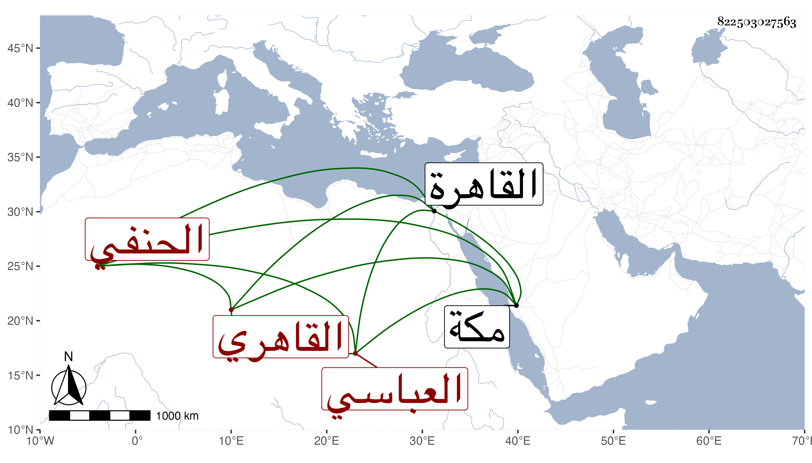

0902Sakhawi.DawLamic.ITO20230111-ara1.EIS1600.822503027563
Biography ID: 822503027563
614
أحمد بن محمد العباسي نسبة للعباسية ثم القاهري الحنفي . كان كأبيه تاجرا فانتمى لعبد البر بن الشحنة وأقرضه فلما ولي ابن الأخميمي القضاء سعى عنده حتى استنابه بل وأعطاه مجلس ابن فيشا بعد موته ثم لم يكتف بهذا حتى زعم أنه عمل ألغازا وتوصل بمن أوصلها للملك فتمقته سيما وقد سأله أن يكون إمامه بعد المحب بن المسدي وأعطاه ورقة وأشيع أن مستنبيه عزله لذلك وأغلظ عليه فما وسعه إلا أن سافر لمكة بحرا كل ذل في سنة ست وتسعين ولما حج عاد إلى القاهرة وامتنع مستنبيه من إعادته .
